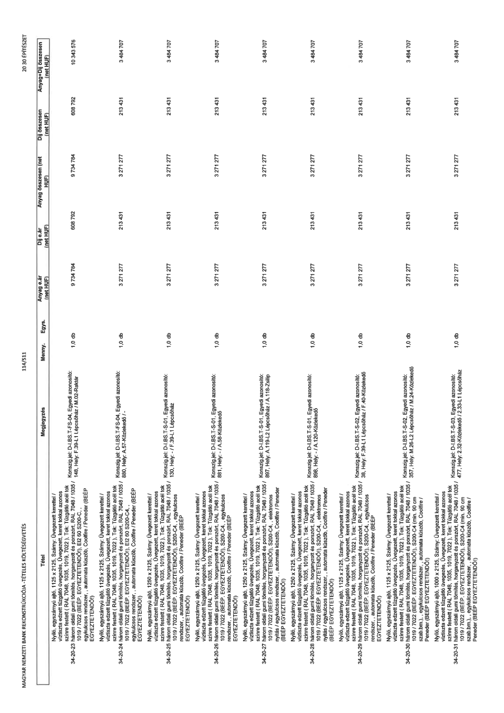

| Tétel | Megjegyzés | Menny. | Egys. | Anyag e.ár (net HUF) | Díj e.ár (net HUF) | Anyag összesen (net HUF) | Díj összesen (net HUF) | Anyag+Díj összesen (net HUF) |
|---|---|---|---|---|---|---|---|---|
| 34-20-23 Nyíló, egyszárnyú ajtó, 1125 x 2125, Szárny: Üvegezett kerettel / víztiszta edzett tűzgátló üvegezés, Üvegezett, keret tokkal azonos színre festett ( RAL 7048, 1035, 1019, 7022 ). Tok: Tűzgátló acél tok három oldali gumi tömítés, horganyzott és porszórt, RAL 7048 / 1035 / 1019 / 7022 (BÉÉP. EGYEZTETENDŐ!), EI2 60 S200-C,, egykulcsos rendszer, , automata küszöb, Coolfire / Peneder (BÉÉP EGYEZTETENDŐ!) | Konszig.jel: D-I.BS.T-FS-04, Egyedi azonosító: 148, Hely: F.39-L1 Lépcsőház / M.02-Raktár | 1,0 | db | 9 734 784 | 608 792 | 9 734 784 | 608 792 | 10 343 576 |
| 34-20-24 Nyíló, egyszárnyú ajtó, 1125 x 2125, Szárny: Üvegezett kerettel / víztiszta edzett tűzgátló üvegezés, Üvegezett, keret tokkal azonos színre festett ( RAL 7048, 1035, 1019, 7022 ). Tok: Tűzgátló acél tok három oldali gumi tömítés, horganyzott és porszórt, RAL 7048 / 1035 / 1019 / 7022 (BÉÉP. EGYEZTETENDŐ!), EI2 60 S200-C4,, egykulcsos rendszer, , automata küszöb, Coolfire / Peneder (BÉÉP EGYEZTETENDŐ!) | Konszig.jel: D-I.BS.T-S-01, Egyedi azonosító: 880, Hely: A.57-Közlekedő / - | 1,0 | db | 3 271 277 | 213 431 | 3 271 277 | 213 431 | 3 484 707 |
| 34-20-25 Nyíló, egyszárnyú ajtó, 1250 x 2125, Szárny: Üvegezett kerettel / víztiszta edzett tűzgátló üvegezés, Üvegezett, keret tokkal azonos színre festett ( RAL 7048, 1035, 1019, 7022 ). Tok: Tűzgátló acél tok három oldali gumi tömítés, horganyzott és porszórt, RAL 7048 / 1035 / 1019 / 7022 (BÉÉP. EGYEZTETENDŐ!), S200-C4,, egykulcsos rendszer, , automata küszöb, Coolfire / Peneder (BÉÉP EGYEZTETENDŐ!) | Konszig.jel: D-I.BS.T-S-01, Egyedi azonosító: 130, Hely: - / F.39-L1 Lépcsőház | 1,0 | db | 3 271 277 | 213 431 | 3 271 277 | 213 431 | 3 484 707 |
| 34-20-26 Nyíló, egyszárnyú ajtó, 1250 x 2125, Szárny: Üvegezett kerettel / víztiszta edzett tűzgátló üvegezés, Üvegezett, keret tokkal azonos színre festett ( RAL 7048, 1035, 1019, 7022 ). Tok: Tűzgátló acél tok három oldali gumi tömítés, horganyzott és porszórt, RAL 7048 / 1035 / 1019 / 7022 (BÉÉP. EGYEZTETENDŐ!), S200-C4,, egykulcsos rendszer, , automata küszöb, Coolfire / Peneder (BÉÉP EGYEZTETENDŐ!) | Konszig.jel: D-I.BS.T-S-01, Egyedi azonosító: 881, Hely: - / A.58-Közlekedő | 1,0 | db | 3 271 277 | 213 431 | 3 271 277 | 213 431 | 3 484 707 |
| 34-20-27 Nyíló, egyszárnyú ajtó, 1250 x 2125, Szárny: Üvegezett kerettel / víztiszta edzett tűzgátló üvegezés, Üvegezett, keret tokkal azonos színre festett ( RAL 7048, 1035, 1019, 7022 ). Tok: Tűzgátló acél tok három oldali gumi tömítés, horganyzott és porszórt, RAL 7048 / 1035 / 1019 / 7022 (BÉÉP. EGYEZTETENDŐ!), S200-C4,, elektromos nyílás / egykulcsos rendszer, , automata küszöb, Coolfire / Peneder (BÉÉP EGYEZTETENDŐ!) | Konszig.jel: D-I.BS.T-S-01, Egyedi azonosító: 897, Hely: A.119-L2 Lépcsőház / A.118-Zsilip | 1,0 | db | 3 271 277 | 213 431 | 3 271 277 | 213 431 | 3 484 707 |
| 34-20-28 Nyíló, egyszárnyú ajtó, 1250 x 2125, Szárny: Üvegezett kerettel / víztiszta edzett tűzgátló üvegezés, Üvegezett, keret tokkal azonos színre festett ( RAL 7048, 1035, 1019, 7022 ). Tok: Tűzgátló acél tok három oldali gumi tömítés, horganyzott és porszórt, RAL 7048 / 1035 / 1019 / 7022 (BÉÉP. EGYEZTETENDŐ!), S200-C4,, elektromos nyílás / egykulcsos rendszer, , automata küszöb, Coolfire / Peneder (BÉÉP EGYEZTETENDŐ!) | Konszig.jel: D-I.BS.T-S-01, Egyedi azonosító: 898, Hely: - / A.120-Közlekedő | 1,0 | db | 3 271 277 | 213 431 | 3 271 277 | 213 431 | 3 484 707 |
| 34-20-29 Nyíló, egyszárnyú ajtó, 1125 x 2125, Szárny: Üvegezett kerettel / víztiszta edzett tűzgátló üvegezés, Üvegezett, keret tokkal azonos színre festett ( RAL 7048, 1035, 1019, 7022 ). Tok: Tűzgátló acél tok három oldali gumi tömítés, horganyzott és porszórt, RAL 7048 / 1035 / 1019 / 7022 (BÉÉP. EGYEZTETENDŐ!), S200-C4 (min. 90 cm szab.bm.), egykulcsos rendszer, , automata küszöb, Coolfire / Peneder (BÉÉP EGYEZTETENDŐ!) | Konszig.jel: D-I.BS.T-S-02, Egyedi azonosító: 38, Hely: F.39-L1 Lépcsőház / F.40-Közlekedő | 1,0 | db | 3 271 277 | 213 431 | 3 271 277 | 213 431 | 3 484 707 |
| 34-20-30 Nyíló, egyszárnyú ajtó, 1125 x 2125, Szárny: Üvegezett kerettel / víztiszta edzett tűzgátló üvegezés, Üvegezett, keret tokkal azonos színre festett ( RAL 7048, 1035, 1019, 7022 ). Tok: Tűzgátló acél tok három oldali gumi tömítés, horganyzott és porszórt, RAL 7048 / 1035 / 1019 / 7022 (BÉÉP. EGYEZTETENDŐ!), S200-C4 (min. 90 cm szab.bm.), egykulcsos rendszer, , automata küszöb, Coolfire / Peneder (BÉÉP EGYEZTETENDŐ!) | Konszig.jel: D-I.BS.T-S-02, Egyedi azonosító: 357, Hely: M.26-L2 Lépcsőház / M.24-Közlekedő | 1,0 | db | 3 271 277 | 213 431 | 3 271 277 | 213 431 | 3 484 707 |
| 34-20-31 Nyíló, egyszárnyú ajtó, 1000 x 2125, Szárny: Üvegezett kerettel / víztiszta edzett tűzgátló üvegezés, Üvegezett, keret tokkal azonos színre festett ( RAL 7048, 1035, 1019, 7022 ). Tok: Tűzgátló acél tok három oldali gumi tömítés, horganyzott és porszórt, RAL 7048 / 1035 / 1019 / 7022 (BÉÉP. EGYEZTETENDŐ!), S200-C4 (min. 90 cm szab.bm.), egykulcsos rendszer, , automata küszöb, Coolfire / Peneder (BÉÉP EGYEZTETENDŐ!) | Konszig.jel: D-I.BS.T-S-03, Egyedi azonosító: 477, Hely: 2.32-Közlekedő / 2.33-L1 Lépcsőház | 1,0 | db | 3 271 277 | 213 431 | 3 271 277 | 213 431 | 3 484 707 |
